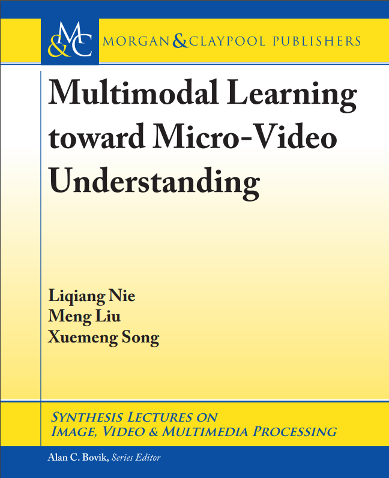
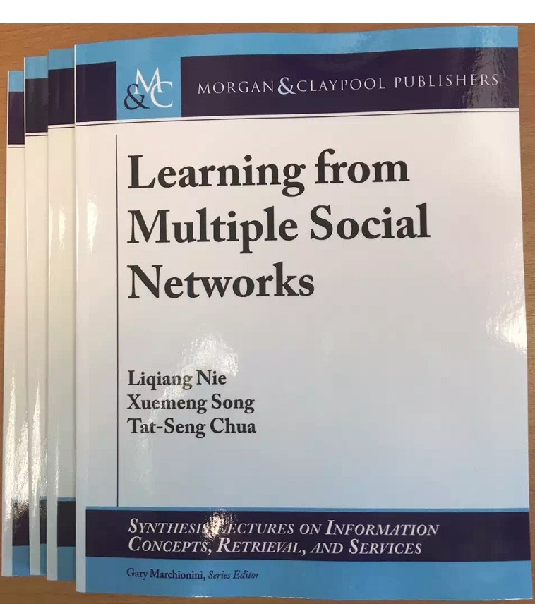

Selected Projects
Intelligent Video Stream Retrieval Based on Target Behaviors (基于目标行为的视频流智能检索)
To ensure public security and maintain a stable social environment, enormous surveillance systems have been deployed in various public places. However, most existing surveillance systems can only analyze video content after it has been fully recorded and are unable to automatically detect anomalous actions in real time.
To realize a more intelligent surveillance system, this project presents a scheme to efficiently retrieve target actions from video streams given natural language queries. In particular, an attention mechanism is designed to strengthen query understanding with temporal context. To improve retrieval efficiency, the input video stream is segmented into atomic units, and the sequential probability together with overall confidence is modeled to generate candidate temporal action clips composed of multiple consecutive units.
Afterwards, a novel cross-modal fusion strategy is introduced to capture the correlation between the given query and each temporal action clip, enhancing representation learning for the textual query and video clip pair. Based on the enhanced representation, the system further optimizes localization of the target video clip and improves the overall performance of intelligent action retrieval from video streams.
Knowledge-Driven Multimodal Dialogue System (知识驱动的多模态对话系统)
The past decade has witnessed the success of the traditional pure text- or voice-based dialog systems. Nevertheless, they are unable to intuitively present users' desired information, nor to vividly express users' intention. Thereby, multi-modal dialog system gradually becomes one of the main developing trend, which enables users and dialog robots to naturally express their thoughts via the mixture of image, text, and video. Despite its significance, compared with our human interactions, the multi-modal dialog system faces the following challenges: 1) It lacks rich knowledge and hence replies illogically, i. e., low intelligence quotient (IQ); 2) It is unable to gain insights into the complex and multi-modal conversational context, and hence unable to capture users' implicit intention, i. e., low adversity quotient (AQ); And 3) it is not good at expression, i. e., low emotional quotient (EQ).
To tackle these problems, this project works towards knowledge-driven multi-modal context understanding and text generation for the complex scenarios. To address the aforementioned problems, this project will explore multi-modal multi-dimensional knowledge collection and representation learning, knowledge-guided multi-modal context modeling and user intention understanding, as well as knowledge-guided text generation and enhancement.
Based upon such a series of studies, the IQ, AQ and EQ of a multi-modal dialog system will be jointly strengthened and users' interaction experience will be substantially enhanced, which can be applied to multiple applications, such as E-commerce customer services.
Development of Intelligent Recognition Equipment for Induced Pluripotent Stem Cell Precursors (诱导多能干细胞前体的智能识别设备研制)
Reprogramming induced pluripotent stem cell (iPS cell) technology is one of the most important biotechnologies of the 21st century, playing a significant role in advancing key diagnostic and therapeutic approaches for major diseases. However, due to limitations such as low efficiency of cell imaging hardwares and poor accuracy of cell recognition algorithms, an effective identification system and systematic research methodology for early-stage iPS precursor cells during reprogramming have yet to be established. Therefore, there is an urgent need to develop an integrated hardware-software system for the early intelligent identification of iPS precursor cells.
This development faces four key scientific challenges: multidimensional cell information detection, high-throughput cell imaging, high-precision spatiotemporal continuous tracking of cells, and high-dimensional intelligent identification of iPS precursor cells. Starting from applied research, the project will conduct innovative studies focusing on the following areas: rapid fluorescence spectroscopy and lifetime microscopy imaging technology, adaptive optical Fourier ptychographic imaging technology, dense cell instance segmentation and evolution tracking technology, and hybrid expert and domain multimodal large model construction technology.
Ultimately, the project aims to create an early intelligent identification instrument for iPS precursor cells with independent intellectual property rights. The outcomes of this project will be widely used in frontline scientific research, providing new equipment and technologies to support the nation's progress in the field of iPS reprogramming research. Additionally, the equipment developed in this project can be customized and adapted to serve other areas of life science research.
Research and Application of General-Purpose Multimodal Foundation Model Technology for Real-World Cognitive Understanding (面向真实世界认知理解的通用多模态基础模型技术研究与应用)
This research develops general-purpose multimodal large models for real-world understanding, targeting the demand for comprehensive and accurate analysis and decision-making from large model applications in complex real-world scenarios.
It investigates efficient multimodal information fusion and compression methods, explores effective cross-modal knowledge transfer mechanisms, and achieves precise cross-modal semantic alignment and mapping. It also studies efficient pre-training and post-training algorithms for such models adapted to real-world environmental data, to enhance their comprehensive reasoning and decision-making capabilities in complex scenarios with frequent environmental element changes and uncertain interactive objects.
Furthermore, this work designs a unified general-purpose multimodal large model supporting both multimodal understanding and generation tasks, to improve the perception and prediction of environmental and agent states in real-world settings, and deploys demonstration applications in practical fields including embodied intelligence, stereoscopic 3D inspection, and human-computer interaction.
Instruction: Please help me find some medicine.
Left, center, and right robotic-arm views (shown only during manipulation)
Multimodal Large Model-Driven Embodied Intelligence (多模态大模型驱动的具身智能)
Embodied intelligence endows robots with the ability to perceive, interact, and act in the real world, yet their capabilities in environmental understanding and logical reasoning remain limited in complex scenarios. Multimodal large models, on the other hand, can accurately comprehend multiple data modalities (e.g., vision, language) and possess strong logical reasoning capabilities, but lack the ability to directly execute actions.
Multimodal large model-driven embodied intelligence combines the strengths of both — the ability to understand multimodal signals from the physical world and reason over multimodal knowledge, as well as the action execution capability of robots — achieving a synergistic enhancement of the two technologies. This project is product-oriented, leveraging artificial intelligence and robotics, and is dedicated to the scientific research and practical application of multimodal large model-driven embodied intelligence, aiming to develop embodied agents capable of autonomous decision-making and execution in complex and dynamic environments.
Specifically, targeting three key aspects of embodied intelligence — environmental perception, task planning, and action execution — this project focuses on multimodal large model-based 3D perception in complex environments, multimodal large model-based complex task planning, and multimodal large model-based complex action execution. The implementation of this project is of great significance to the economic, social, and technological development of both China and Shenzhen.
Grasping
Folding
Refueling
Cooking
Micro-video Analysis
The unprecedented growth of portable devices contributes to the success of micro-video sharing platforms such as Vine, Kuaishou, and Tik Tok. They enable users to record and share their daily life within a few seconds in the form of micro-videos at any time and any place. As a new media type, micro-videos gain tremendous user enthusiasm because of their brevity, authenticity, communicability, and low cost.
Yet micro-videos also pose several research challenges, including information sparseness, hierarchical structure, low quality, multimodal sequential data, and the lack of public benchmark datasets. To address these issues, we present state-of-the-art multimodal learning theories and verify them over three practical tasks of micro-video understanding: popularity prediction, venue category estimation, and micro-video routing. Packed codes and data are available at https://ilearn2019.wixsite.com/microvideo.

You can enjoy this book via http://bit.ly/2mSWyMP.
Learning from Multiple Social Networks
With the proliferation of social network services, more and more users, including individuals and organizations, are simultaneously involved in multiple social networks for different purposes. These networks characterize the same users from different perspectives, and their contexts are often consistent or complementary rather than independent.
Compared with using a single social network, aggregating multiple social networks provides a better way to comprehensively understand users. My book on this project is available on Amazon.

We currently continue this research direction on learning from overlapping social networks and group profiling across multiple social networks.